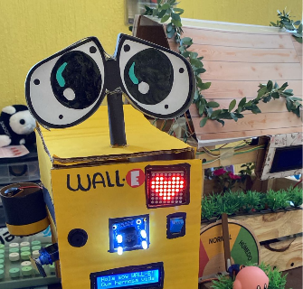
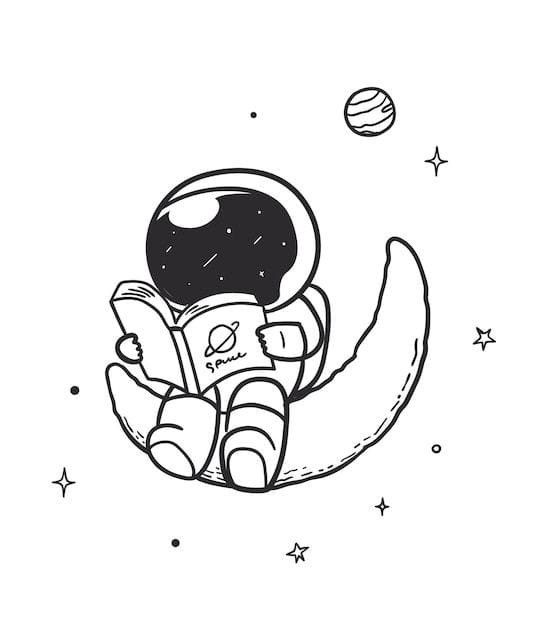
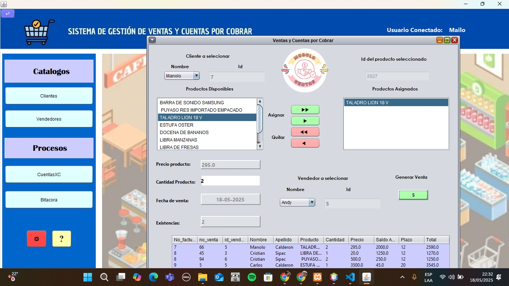
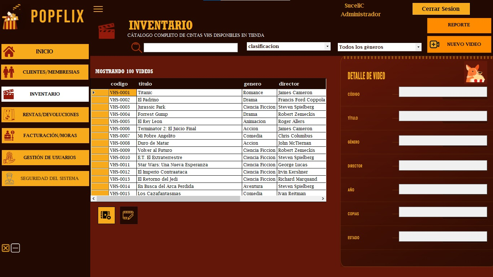

WALL-E Robot
Robot autónomo inspirado en WALL-E construido con Arduino. Integra sensor ultrasónico, matriz de LEDs y pantalla LCD con mensajes dinámicos.
VER MÁS →— PORTAFOLIO PROFESIONAL —
Ingeniería en Sistemas · 8vo Semestre
Universidad Mariano Gálvez de Guatemala
"Construyendo soluciones que trascienden — del código a la realidad."

Soy Evelyn Sofía Andrade Luna, estudiante de Ingeniería en Sistemas en 8° semestre en la Universidad Mariano Gálvez de Guatemala. A lo largo de mi formación he desarrollado proyectos que van desde sistemas de gestión empresarial hasta robótica con Arduino, siempre con enfoque en resolver problemas reales con tecnología funcional y bien estructurada.
Me apasiona diseñar soluciones que no solo funcionen, sino que sean accesibles, escalables y de impacto. Trabajo con múltiples lenguajes y entornos de desarrollo, lo que me permite adaptarme con rapidez a distintos contextos y equipos.
Estoy en la etapa final de mi carrera y lista para aportar valor real en el entorno profesional. Si buscas a alguien comprometida, técnicamente sólida y con hambre de aprender, hablemos.

Próximamente...
"Soluciones reales, construidas con propósito"

Robot autónomo inspirado en WALL-E construido con Arduino. Integra sensor ultrasónico, matriz de LEDs y pantalla LCD con mensajes dinámicos.
VER MÁS →
Sistema de escritorio en Java para gestión integral de ventas y cuentas por cobrar. Módulos de catálogos, procesos y reportes.
VER PROYECTO →
Aplicación en C# para gestión completa de videoteca. Clientes, membresías, inventario, rentas y facturación de moras.
VER PROYECTO →